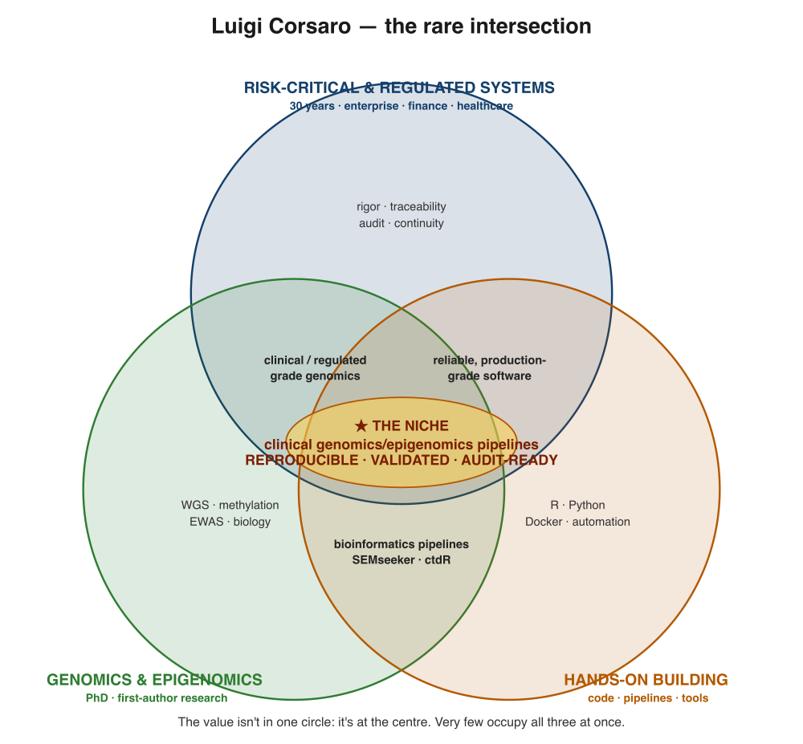

I build the pipelines that clinical genomics and epigenomics can rely on, taking sequencing and DNA-methylation analysis from research scripts to reproducible, validated and audit-ready production. My work draws on a rare combination of strengths: 30 years of engineering risk-critical, regulated systems, a PhD in Genomic Data Science, and first-author epigenetics research supported by public, citable code.

The value is not in any single circle; it lies at the centre.
Review of reproducibility, traceability, quality control and audit-readiness for existing genomics and methylation pipelines.
Conversion of analysis scripts into modular, documented and containerised production pipelines for WGS, NGS and EWAS.
Senior ownership of genomics engineering: architecture, validation strategy, mentoring and knowledge transfer.
For further detail, see the publications and projects pages.